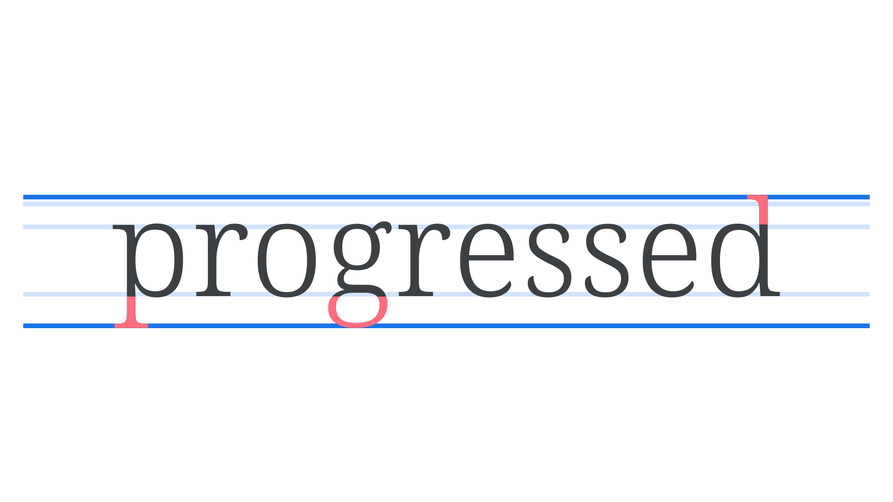
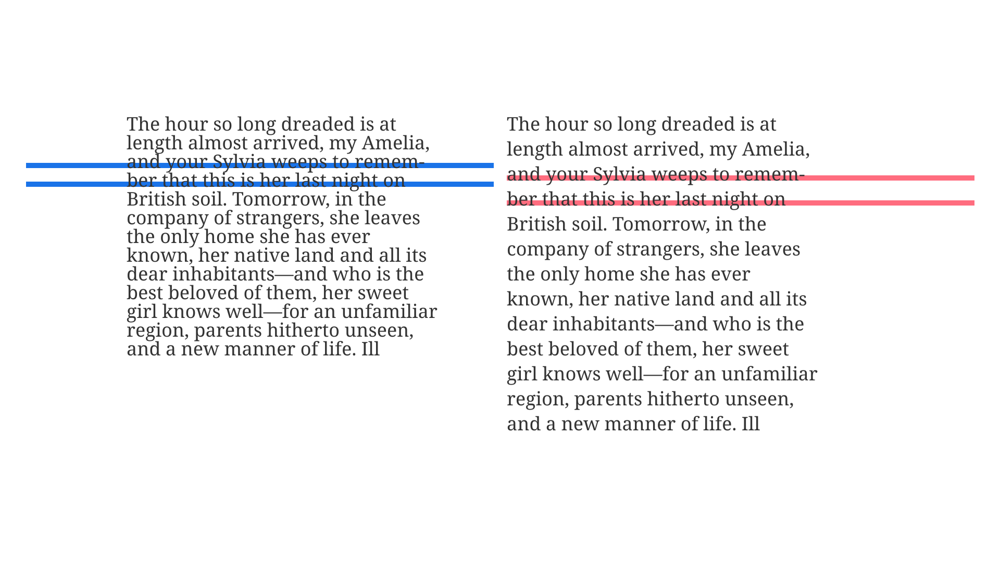

Ascenders & descenders
By Google Fonts Knowledge contributors · Google Fonts Knowledge.
Original article · Source on GitHub · CC BY-SA 4.0. Text, illustrations and existing credits reproduced from the licensed Knowledge repository. Open Shelf adapted the layout and links; these adaptations are also CC BY-SA 4.0. No endorsement implied.
An ascender is an upward part of a letterform (often a vertical stroke) that extends above the x-height and usually above the cap height, such as the stem of a lowercase b or d. A descender goes the other way: It’s a downward vertical stroke that extends below the baseline, such as the stem of a lowercase g or p.

Because very pronounced ascenders or descenders add to a typeface’s overall height, they effectively reduce the x-height. Similarly, if a typeface is said to have a high x-height, it’s usually safe to assume that it therefore has short ascenders and descenders.
In paragraph text, the interplay between the descenders of one line with the ascenders of the line below can be a good indicator of an appropriate line height setting. If they touch, the line height is too tight.
